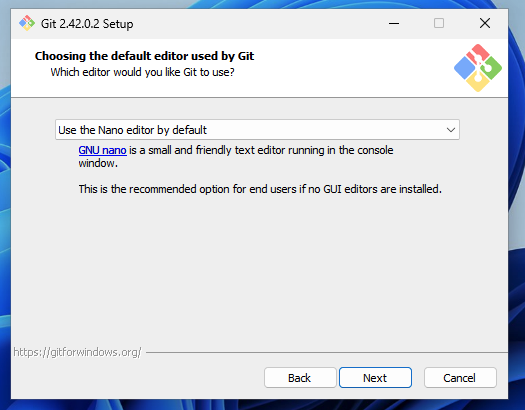
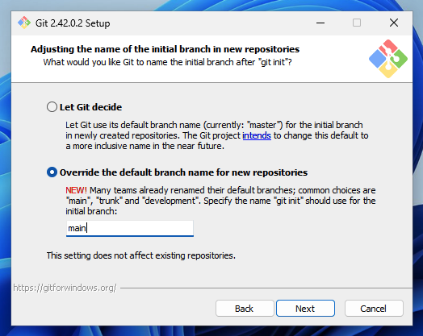
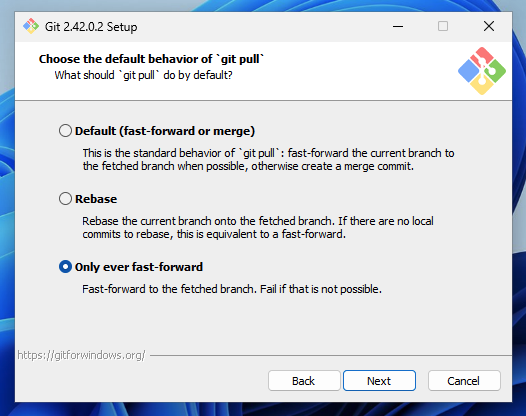
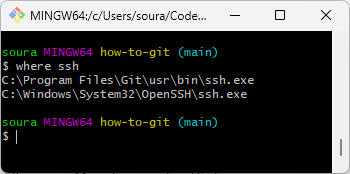
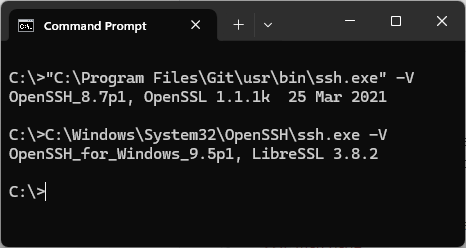
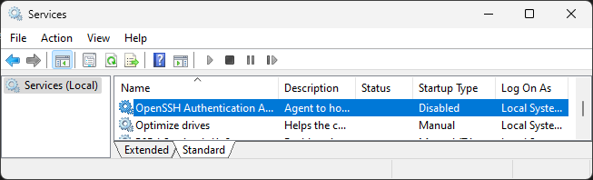
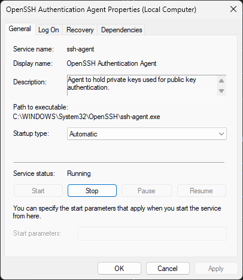
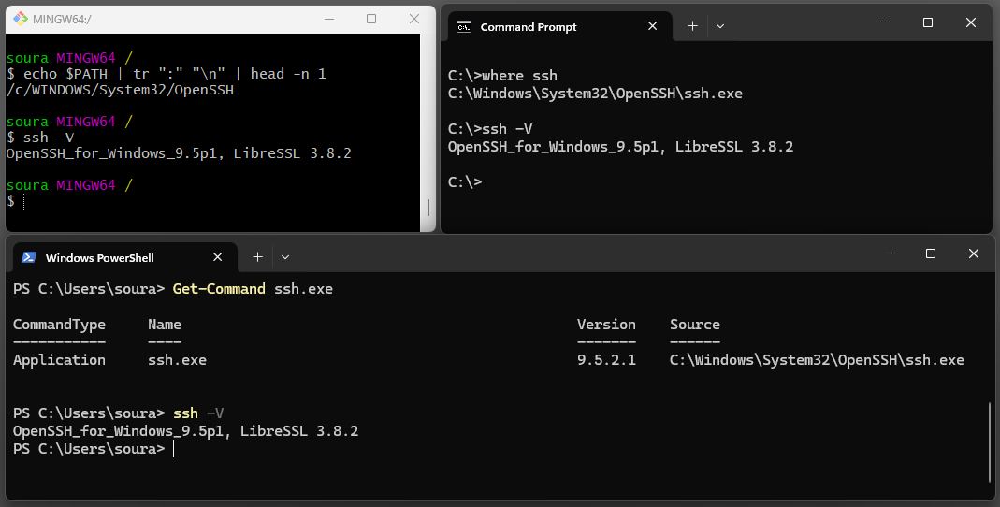

Win
Asenna Git client: Git for Windows. Ethän klikkaa autopilotilla Next-nappulaa, vaan toimit tunnollisen it-alan ammattilaisen tavoin ja luet kaikki vaihtoehdot läpi. Kiinnitä huomiota erityisesti seuraavissa kuvissa näkyviin vaihtoehtoihin. Asetukset säätävät järjestelmätason defaultteja ja tulevat kaikkiin konfiguraatiohin jatkossa defaulttina.
Suositellut asetukset muuttaa
Default Editor

Kuvio 1: Asennus pyytä sinua valitsemaan default editorin muun muassa commit messagejen kirjoittamista varten. Vakiona tarjottu vim ei ole aloittelijoita varten. On suositeltavaa valita Nano tai esimerkiksi Notepad++ (jos on asennettuna). Nano:lla pääsee pitkälle.
Init branch

Kuvio 2: Oletusbranchin nimi kannattaa vaihtaa vastaamaan nykypäivän standardia eli main. Juuri kukaan ei enää käytä sanaa master.
Pull FF

Kuvio 3: On suositeltavaa, että et anna Gitin luoda mergejä sinun pyytämättäsi, ellei nimenomaan fast-forward onnistu.
Asennuksen jälkeen
- Käynnistä asentamisen jälkeen tietokone uusiksi.
- Käynnistä Start-menusta Git Bash.
- Testaa
git --version - Kun ohjelmisto on asennettu, siirry lukuun Konfiguraatio.
Mikäli luit asennuksen tarjoamat vaihtoehdot huolella, ja asetit sinulle sopivat (tai suositellut) asetukset, säästyt varsinaisessa konfiguraatioiden laittamisessa yllättävän helpolla.
Advanced: SSH Agent 💀
Warning
Tämä osio on tarkoitettu heille, jotka:
- haluavat välttyä kirjoittamasta SSH passphrasea jokaisen git- tai ssh-komennon yhteydessä uudestaan ja uudestaan
- haluavat käyttää VS Code Dev Containers -ominaisuutta siten, että SSH toimii kontissa, mahdollistaen git-työskentelyn
- tietävät, mikä on PATH-ympäristömuuttuja
Jos et tiedä, mitä aiemmat rimpsut tarkoittavat, tämä loppusivu on tuskin sinua varten - sinut kenties neuvotaan tänne myöhemmissä vaiheissa opiskelua.
Pohjustus
Aloitetaan pohjustamalla hieman, miksi tässä on niin monta vaihetta. Kun asennat Git for Windowsin, se kysyy asennuksen aikana, että:
[x] Use bundled OpenSSH
This uses ssh.exe that comes with Git.
[ ] Use external OpenSSH
NEW! This uses an external ssh.exe. Git will not install its own OpenSSH
(and related) binaries but use them as found on PATH.
En ole yllä neuvonut vaihtamaan tätä asetusta toiseksi, koska  en halua ensimmäistä kertaa gittiä käyttäville turhaa asetustyötä, ja koska
en halua ensimmäistä kertaa gittiä käyttäville turhaa asetustyötä, ja koska  muut työkalut, kuten TortoiseGit, saattavat asentaa uusia
muut työkalut, kuten TortoiseGit, saattavat asentaa uusia ssh.exe-tiedostoja PATH:iin muutenkin. Näinpä sinun tulee osata itse varmistaa, että git ja ssh komennot käyttävät juuri sitä binääriä, mitä sinä haluat niiden käyttävän. Ja tämähän ratkotaan tyypillisesti PATH-ympäristömuuttujalla, mutta toki asiaan voi vaikuttaa muutkin seikat, kuten GIT_SSH-ympäristömuuttuja tai Git global configit. Kurkataan vaiheittain, miten tämä tehdään. Aloitetaan kuitenkin tutustumalla siihen, mitä where ssh-komento kertoo ennen kuin teemme mitään muuta.

Kuvio 4: Where ssh palauttaa kaikki PATH:sta löytyvät ssh.exe-tiedostot siinä järjestyksessä, missä ne löytyivät. Ylin ajetaan vakiona.

Kuvio 5: Huomaa, että Program Files\-hakemistoon asennettu OpenSSL on tyystin eri sovellus kuin System32\-hakemistosta löytyvä LibreSSL.
Mitä tästä hyödymme? Microsoftin hallinnoima ssh.exe osaa temppuja, joita täysin avoimen lähdekoodin versio ei osaa:
- Käynnistää SSH-agentin (
ssh-agent.exe) Windowsin bootissa - Tallentaa ja noutaa avaimia sekä passphraseja Windowsin omasta backendistä
SSH Client
Jos where ssh-komento ei löydä Microsoftin versiota ssh.exe:stä, asenna se. Klikkaa Win+X, valitse System ja sitten Optional features. Jos listalta ei löydy haulla OpenSSH Clientiä, lisää se.
Agentti

Kuvio 6: Windowsin Run-kentän avulla voi ajaa komentoja. Tällä kertaa tarvitsemme Service Managementtiä.

Kuvio 7: Services-listasta löytyy O-kirjaimen kohdalta OpenSSH Authentication Agent. Se on vakiona Disabled.
Paina Win+R ja kirjoita kenttään services.msc. Aukeaa Service (Management) -ikkuna, josta sinun tulee etsiä OpenSSH Authentication Agent. Näistä vaiheista on kaksi kuvaa yllä (Kuvio 6 ja 7).

Kuvio 8: Vaihda agentin start-up -tilaksi Automatic ja paina Apply. Tämän jälkeen Start-nappi muuttuu klikattavaksi. Klikkaa sitä.
OpenSSH Authentication Agent tulee aktivoida, jotta ssh-agent.exe on ajossa jatkossa aina Windowsin käynnistyessä. Muistutan vielä, että tässä on kyse siitä System32/-hakemiston alla löytyvästä ssh-agent.exe-tiedostosta, ja ssh.exe-tiedostosta joka tuota kutsuu. Ei siis siitä Git:n asentamasta. Aktivointiin näkyy ohjeet yllä olevassa kuvassa ja sen kuvatekstissä.
Tip
Tämän vaiheen voi tehdä myös PowerShell-komennoilla näin:
Tuunaa polkusi
Jos avaat Command Promptin tai PowerShellin, niin tällä hetkellä sinulla pitäisi olla tilanne, että ssh -V vastaa OpenSSH_for_Windows_9.5p1, LibreSSL 3.8.2. Testaa tämä! Jos näin ei ole, lisää %WINDIR%\System32\OpenSSH\ Windowsin ympäristömuuttujan PATH ylimmäksi elementiksi.
Valitettavasti Git Bash lisää PATH-ympäristömuuttujan polkuun useita hakemistopolkuja, joista yksi (/usr/bin/) sisältää ssh.exe-tiedoston. Koska tämä polku on ennen Windowsin Environment Variableseja, et voi korjata tätä kokonaan Windowsin päästä. Tämän voi korjata ainakin kahdella tavalla:
- Asenna Git for Windows uusiksi 😥
- Muokkaa PATH:ia Bashin startup-tiedostossa. 🤓
Me olemme coolejä nörttejä, joten valitsemme jälkimmäisen. Aja alla näkyvä komento, joka lisää (append) rivin PATH="/c/WINDOWS/System32/OpenSSH:$PATH tiedoston C:\Users\kayttajanimesi\.bashrc loppuun. Jos et tiedä mikä tämä tiedosto on, sinulla ei ole sellaista. Tällöin komento luo tiedoston sinulle.
Warning
Sulje ja avaa uusiksi Git Bash. Kyseinen .bashrc-tiedosto ladataan aina uuden Git Bash -istunnon yhteydessä. Bash saattaa valittaa sinulle, että se haluaa luoda .bash_profile-tiedoston sinulle: tätä varoitusta ei enää jatkossa tule.

Kuvio 9: Lopulta on hyvä tehdä sanity check. Ssh:n pitäisi löytyä oikeasta polusta, ja vastata ssh -V-komentoon odotetulla tavalla kaikissa käyttämissäsi shelleissä. Kuvassa Git Bash, Command Prompt ja Windows PowerShell.
Agentti käyttöön
Tässä vaiheessa oletetaan, että sinulla on jo avain olemassa, ja avaimella on passphrase, ja vain on viety Kamit GitLabiin (repo.kamit.fi). Jos ei, kurkkaa Tunnistautuminen/SSH/Avaimen Luonti ohjeet avaimet tekemiseen. Voit kokeilla, että SSH löytää yhä avaimesi sen vakiolokaatiosta (~/.ssh/id_{algoritmi}) ajamalla komennon:
Note
Minulla tämä Microsoftin ssh.exe jäätyi ilman winpty:tä, kun se yritti kysyä passphrasea, eikä mitä ilmeisemmin saanut popuppia auki.
Mikäli ajat komennon useita kertoja, se kysyy passphrasea joka kerta. Miksi? Koska avainta ei ole lisätty agenttiin, vaikka se on ajossa. Jos kirjoitat ssh-add -L, se kertoo, että The agent has no identities. Let's fix this!
Kun ajat yllä olevan, passphrase kysytään sinulta viimeisen kerran. Jatkossa voit ajaa ssh -T ssh://git@repo.kamit.fi:45065 ja ssh.exe löytää avaimen salasanoineen agentin muistista. Jos käynnistät koneen uusiksi, komennon ssh-add -L pitäisi yhä listata sinun avaimesi ja passphrasen pitäisi yhä tulla suoraan agentilta. Käytännössä voisit nyt vaikka poistaa koko ~/.ssh/id_ed25519-tiedoston, ja SSH toimisi yhä, koska avain ladataan agentilta.
Git
Testaa myös, että jonkin sinun repositorion kloonaaminen pelaa. Kaiken järjen mukaan tässä vaiheessa ei pitäisi tulla juurikaan ongelmia, koska git etsii ssh:ta PATH:sta - ja sehän me ollaan juuri tarkistettu kuntoon.